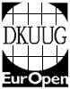
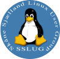

UNIX side
User groups


Når jeg får lov at vælge - og det sørger jeg for at jeg gør - vælger jeg
UNIX / UNIX-lignende operativsystemer... Derfor har jeg valgt at melde mig ind i de danske brugergrupper DKUUG - Dansk Unix brUger Gruppe og SSLUG - Skåne Sjælland Linux User Group.
Samtidig har jeg sammen med Kneth stiftet vores egen lille nørdeforening kaldet geekclub.dk. (Det er lidt forskelligt om der er noget på siden eller ej... :-) Jeg er formand, Kneth er indpisker, Torben kasserer og Per er IT (u)ansvarlig... :-)
Un*x erfaring
Siden 1995 har jeg overvejende kørt UNIX på min personlige computer, og
har derfor erfaring med en del forskellige systemer:
(Kører
lige
nu de med fed markerede i produktion)
Open source systemer
Ubuntu GNU/Linux
Debian GNU/Linux
Red Hat Linux
Slackware Linux
Caldera Openlinux
SuSE Linux
FreeBSD
OpenBSD
NetBSD
Comercielle x86 UNIXes
Mac OS X
SCO Unix (Openserver &
UnixWare)
SUN Solaris
Ud over disse x86 UN*X systemer, har jeg på andre processortyper arbejdet med AIX, Solaris, HP-UX, Digital Unix og Irix.
Af dem alle holder jeg nok mest af debian GNU/Linux.
Applikationer
Som udviklingsværktøjer har jeg erfaring med
- C++ og C.
- Matlab - eller open source alternativet
Octave.
- SAL er et godt sted at kende.
- System administration laver jeg oftest med I /bin/sh og awk, sed, vi... stuff.
- Min editor er som oftest emacs, men vi benyttes ivrigt i dennes fravær...
UNIX humor - et tohovedet uhyre...
UNIX/Star Wars - Eric Raymonds UNIX wars